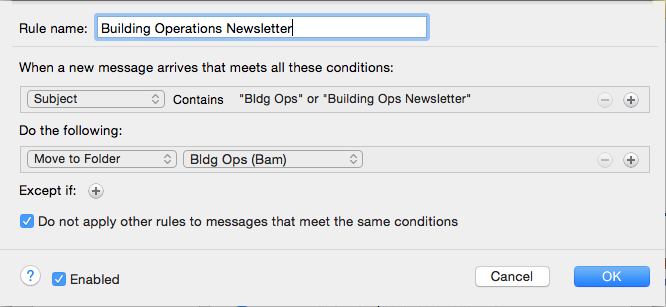
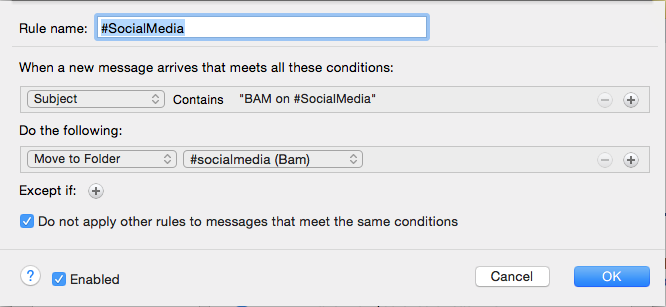
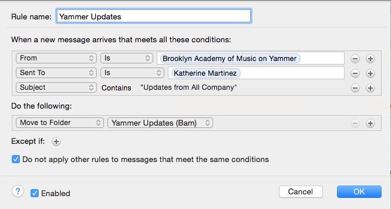

Collecting Email
BAM Hamm Archives actively collects email records as a source of significant information illustrating the history of the Institution. These exchanges provide invaluable insight into experiences and actions influencing the evolution of programming at BAM as well as shifts within the surrounding community.
Access
Email collected by the Archives is not currently available for research due to legal, financial, and technical limitations, as described below. Staff requiring access to information contained in email previously transferred to the Archives may submit a request. A copy will be obtained pending access restrictions outlined below.
Level I
After material has been delivered to the Archives, records that were not originally made public are restricted for a minimum of 10 years to ensure the privacy of individuals and to protect the organization’s ability to conduct business. Once this period has passed, the Director of the Archives may authorize internal access, or in response to an external request, provide a means of viewing records on-site. Public access will only be granted after approval and review.
Level II
Records originally made public may be freely accessed after delivery to the Archives at the discretion of the Institution.
Disposition
In the context of email, this refers to the planned and orderly destruction of messages based on the Records Retention Schedule, or otherwise, the manual extraction of specific records to move them out of desktop application into the custody of the Archives or a shared server space within the department.
Office 365 allows for automated destruction of mail after assigned periods of time. For information concerning the disposition timelines set for your department, please refer to the Records Retention Schedule.
Rules
Setting custom rules can organize content into designated folders without interrupting your daily work. For example, consider establishing rules for routine messages coming through BAM. These usually don't require your immediate attention, they can be easily categorized, and because they often contain current news, having them in a single folder enables simple deletion when they are no longer relevant.
Current routine messages at BAM:
BAM Board News
BAM in Social Media
BAM in the News
BAM Membership Department
BAM... and then you read this
Building Operations Newsletter
Dance Motion USA Newsletter
Yammer Updates
Additionally, custom rules can enable you to color-code (categorize) your messages based on subject or sender, or give them priority (low, normal, high). Many combinations of conditions and actions are possible that can help you organize your incoming mail. By reviewing the options you can determine how to make Outlook 365 work best for you.
Sample rules based on recurring subject lines:
Building Operations Newsletters:
Social Media Updates:
Yammer Notifications:
Resources
How to set a rule
How to create a folder
How to set a retention period
 Featured Archives Item: Poster for the Mark Morris Dance Group production "The Hard Nut" during the BAM Fall Series (1993).View item in BAM Digital Archives
Featured Archives Item: Poster for the Mark Morris Dance Group production "The Hard Nut" during the BAM Fall Series (1993).View item in BAM Digital Archives
 Featured Archives Item: Program for The Fool's Revenge (1878).View item in BAM Digital Archives
Featured Archives Item: Program for The Fool's Revenge (1878).View item in BAM Digital Archives
 Featured Archives Item: Brooklyn Academy of Music and Majestic Theater signage, circa 1918.View item in BAM Digital Archives
Featured Archives Item: Brooklyn Academy of Music and Majestic Theater signage, circa 1918.View item in BAM Digital Archives